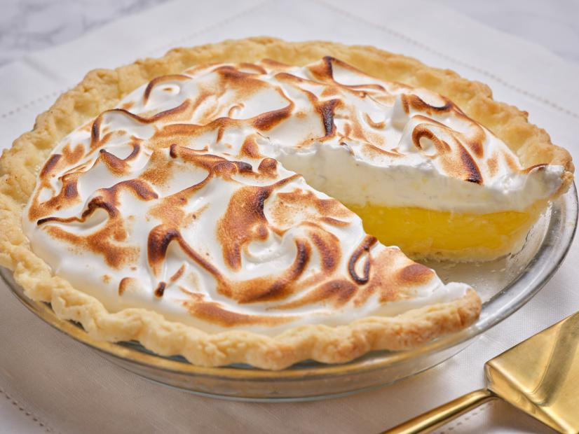

My Favourite Dessert Recipes!
This is a webpage with 5 of my favourite recipes! I hope you love these as much as I do!
If you love these recipes, check out this blog for more great ideas :)
Lemon Meringue Pie

Ingredients
- 1 1/2 cups plain flour
- 2 tbsp pure icing sugar
- 125g salted butter
- 2 1/2 tbsp iced water
Lemon filling
- 1/3 cup cornflour
- 1/2 cup water
- 1 cup lemon juice
- 2 cups caster sugar
- 60g butter
- 4 eggs, separated
Method
- Sift the flour and icing sugar into a large bowl. Use your fingertips to rub the butter into the flour mixture until it resembles fine breadcrumbs.
- Add the water and use a round-bladed knife to stir until a dough forms. Use your hands to bring the dough together in the bowl. Turn onto a sheet of non-stick baking paper and roll out to a 5mm-thick disc. Use the pastry to line a 23cm (base measurement) pie dish. Trim excess pastry. Cover the pastry with baking paper. Place in the fridge for 30 minutes to rest.
- Preheat oven to 180°C. Fill the lined dish with pastry weights or rice. Bake in oven for 15 minutes. Remove the paper and pastry weights or rice. Bake for a further 15-20 minutes or until crisp and golden. Set aside to cool completely.
- Meanwhile, to make the lemon filling, combine the cornflour, water, lemon juice and half the sugar in a saucepan. Use a balloon whisk to stir over medium heat for 4 minutes or until the mixture boils and thickens. Continue to cook, stirring constantly, for a further 1 minute. Remove from heat. Whisk in butter and egg yolks. Transfer to a bowl. Cover with plastic wrap and place in the fridge for 3 hours or until cooled completely.
- Preheat oven to 190°C. Use an electric beater to beat the egg whites in a clean, dry bowl until soft peaks form. Gradually add the remaining sugar, 1 tablespoonful at a time until the mixture is thick and glossy.
- Spread the filling over the base of the pastry case. Spoon over the meringue mixture and spread to the edge of the pastry. Use the back of a spoon to create peaks. Bake in oven for 5 minutes or until the meringue peaks are light golden. Set aside to cool completely. Serve.
Chocolate Mud Cake
Ingredients
- 250g butter, chopped
- 200g baking dark chocolate, chopped
- 2 cups caster sugar
- 1 cup cold water
- 2 eggs, lightly beaten
- 1 cup self-raising flour, sifted
- 1 1/2 cups plain flour, sifted
- 1/4 cup cocoa powder, sifted
Chocolate ganache
- 200g baking dark chocolate, chopped
- 2/3 cup thickened cream
Method
- Preheat oven to 180°C/160°C fan-forced. Grease a 6cm-deep, 22cm round cake pan. Line base and sides with baking paper.
- Melt butter in a large saucepan over medium-low heat. Add chocolate, sugar and 1 cup cold water. Cook, stirring constantly, for 3 to 4 minutes or until smooth. Transfer to large bowl. Cool for 10 minutes.
- Add eggs. Stir to combine. Add flours and cocoa. Stir until smooth. Pour mixture into prepared pan. Bake for 1 hour and 30 minutes or until a skewer inserted in the centre has moist crumbs clinging. Stand for 10 minutes in pan. Turn out onto a wire rack to cool.
- Meanwhile, make chocolate ganache: Place chocolate and cream in a small saucepan over medium-low heat. Cook, stirring constantly, for 3 to 4 minutes or until smooth. Transfer to a bowl. Refrigerate for 30 minutes or until thick enough to spread. Spread over cake. Top with chocolate flakes. Stand for 10 minutes or until ganache is set. Serve.
Sticky Date Pudding
Ingredients
- 250g pitted dates, chopped
- 1 tsp Coles Bicarbonate Soda
- 1 1/2 cups boiling water
- 125g Lurpak unsalted butter, softened
- 1 cup brown sugar
- 1 tsp vanilla extract
- 2 eggs
- 1 3/4 cups self-raising flour, sifted
Caramel sauce
- 1 cup brown sugar
- 300ml thickened cream
- 1/2 tsp vanilla extract
- 60g butter
Method
- Preheat oven to 180°C. Grease and line the base of a 7cm deep, 22cm (base) cake pan.
- Place dates and bicarbonate of soda into a bowl. Pour over boiling water. Allow to stand for 20 minutes.
- Using an electric mixer, beat butter, sugar and vanilla until pale and creamy. Add eggs, 1 at a time, beating well after each addition. Using a large metal spoon, fold through date mixture and flour until well combined.
- Spoon mixture into prepared cake pan. Bake for 35 to 40 minutes or until a skewer inserted into the centre comes out clean. Turn onto a plate.
- Make sauce: Combine all sauce ingredients in a saucepan over medium heat. Cook, stirring often, until sauce comes to the boil. Reduce heat to medium-low. Simmer for 2 minutes.
- Pierce pudding all over with a skewer. Pour 1/2 cup of warm sauce over warm pudding. Stand for 10 minutes. Cut into wedges. Serve with remaining sauce.
Apple Pie

Ingredients
- 1 3/4 cups (260g) plain flour, plus extra for dusting
- 1/2 cup (75g) self-raising flour
- 185g unsalted butter, chilled, cut into small pieces
- 1/3 cup (75g) caster sugar
- 2 eggs
- 1 tbsp chilled water
- 1 tbsp milk
- Demerara sugar or caster sugar, to sprinkle
- Ice-cream, to serve
Filling
- 45g unsalted butter
- 1/2 cup (110g) caster sugar
- 8 large apples
- Juice of 1 lemon
- 1/4 tsp ground cloves
- 1 tsp cinnamon ground
Method
- Sift flours and a pinch of salt into a large mixing bowl. Add butter and rub lightly into flour with your fingertips. Lift mixture high above the bowl as you rub, to incorporate air into the pastry and make it lighter. Continue until mixture resembles fine breadcrumbs, then stir through sugar. Lightly beat 1 egg with 1 tablespoon chilled water, then drizzle over flour mixture. Start to bring the dough together by cutting the liquid into the dough with a blunt knife, then form into a smooth ball with your hands, adding a little more water if necessary. Divide dough into two pieces, one slightly larger than the other. Wrap in plastic wrap, and chill for 30 minutes.
- To make the filling, peel and core the apples, and cut each into 8 pieces. Toss immediately with lemon juice in a large bowl, to prevent apples from discolouring. Place the butter and sugar in a large frypan over medium-low heat. When butter has melted, add apples and spices, then stir to coat. Cook, stirring occasionally, for 10 minutes or until apples have softened. Set aside to cool.
- Roll out the larger pastry ball on a floured workbench to a 30cm circle (about 2mm thick). Roll pastry around rolling pin, then unroll over a 22cm metal pie dish. Gently press into corners and allow excess to overhang. Place filling in base with a slotted spoon. Roll the small pastry piece to a 25cm circle. Beat remaining egg with milk, brushing some on rim of the base. Top with small pastry.
- Lift the pie dish and cut excess pastry from edges with a sharp knife. Crimp edges of pastry together the tail of a spoon. Chill for 30 minutes. Preheat oven to 180C, place pie dish on a baking tray and cut air vents in the centre of the pie. Brush top of pie with more beaten egg, sprinkle with demerara or caster sugar and bake for 45 minutes or until golden brown.
Custard Tart
Ingredients
- 1 1/2 cups plain flour
- 1/3 cup icing sugar mixture
- 125g butter, chilled, chopped
- 1/2 tsp vanilla extract
- 1 egg yolk
Filling
- 3 eggs
- 2 tsp vanilla extract
- 1/3 cup caster sugar
- 2 3/4 cups milk, warmed
- Pinch nutmeg
Method
- Grease six 3.5cm-deep, 7.5cm round (base) pie tins. Process flour, icing sugar and butter until mixture resembles fine breadcrumbs. Add vanilla and egg yolk. Process until dough just comes together. Shape into a disc. Cover with plastic wrap. Refrigerate for 30 minutes.
- Preheat oven to 200°C/180°C fan-forced. Place baking tray in oven. Divide dough into 6. Roll each between 2 sheets baking paper until 3mm-thick. Line tins with pastry. Line pastry with baking paper. Fill with pie weights or uncooked rice. Place on hot baking tray. Bake for 10 minutes. Remove weights and paper. Bake for 5 minutes or until pastry turns golden. Cool completely.
- Make Filling: Reduce oven to 160°C/140°C fan-forced. Whisk eggs, vanilla, sugar and milk together. Pour into pastry. Sprinkle with nutmeg. Bake for 35 minutes or until just set. Cool completely. Serve.